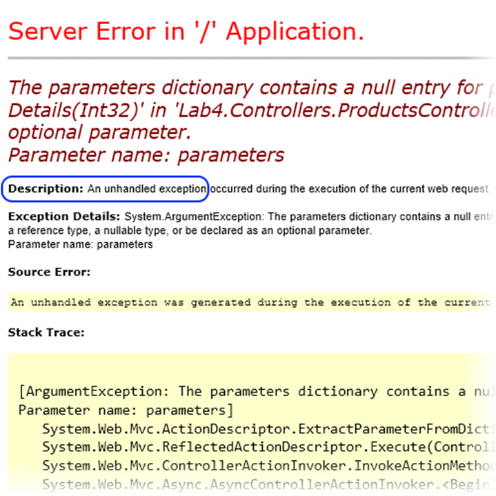
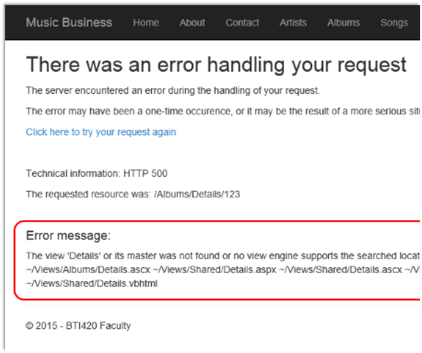
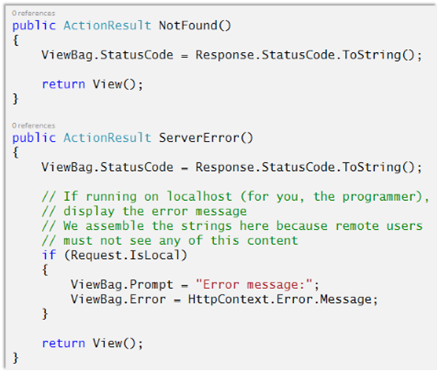
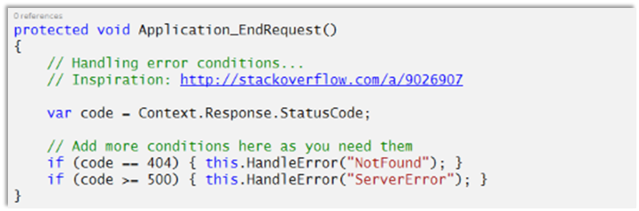
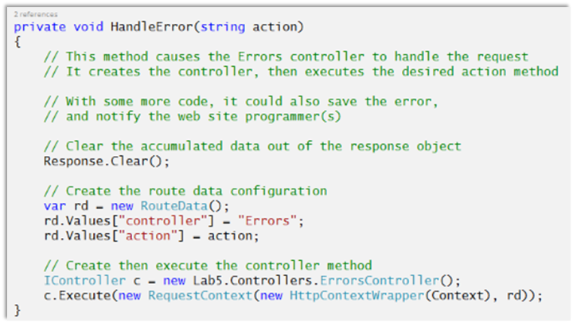

INT422 – Week 9 Lecture Notes – Part 2
Error handling. Assignment 8 hands-on.
Handle request errors in an ASP.NET MVC web app
This section suggests an approach for gracefully handling request errors in an ASP.NET MVC web app. Inspiration for some of this was suggested by this StackOverflow answer.
What is the problem?
For new ASP.NET MVC programmers, two request errors are often seen:
The first error – HTTP 404 – happens when a requested resource does not exist. Click the image to open it full-size in a new tab/window.
The other happens when there’s a logic error in your code. For example, if you make a request that does not include a required argument (e.g. /products/details, without the /123 argument), you will see the following:

In both situations – and in any error situation – you must NOT show this error screen to users.
What should you do?
Add code to your project, so that a “not found” response looks similar to this:
And a ‘server error’ response looks similar to this, for browser users on the web:
For you – the programmer – a bit more information can be added, to help you locate the error:

❝Writing a suitable 404 page can be a serious yet amusing undertaking.
In a search engine, look for: 404 page custom or creative or best
Look at some of the results for inspiration.
Google has some suggestions on how to create a useful 404 page.
❝Also…
This suggested solution is not the last word on this topic.
It is enough for new ASP.NET MVC programmers, but it may not be enough for a production web app at scale.
There are third-party (via NuGet) error logging frameworks that can be added to a project, which offer more features and functionality.
Adding error-handling to a project
This solution will be added to a future project template. Here’s how it works.
We will add code to the project. We’ll add an ‘errors’ controller (and some views), and another (event handling) method in the MvcApplication class.
Add an ‘errors’ controller
Add an errors controller; you can use the ’empty’ template.
Change its class declaration to include the ‘sealed’ modifier:
public sealed class ErrorsController : Controller
Our solution will handle two types of errors:
Here’s some suggested code. We will use the ViewBag property to easily pass simple data to the view, and avoid the need to create view model classes.

Add views for ‘not found’ and ‘server error’
Add views for the two methods. You can use the ’empty’ template.
Add your own content to make a useful page. You can implement the suggestions seen above.
Add methods to the MvcApplication class
We will write two methods in this class:
In an ASP.NET MVC 5 web app, the an instance of the MvcApplication class is created (by the ASP.NET runtime) when the first request is received. The app’s lifetime is twenty (20) minutes after receiving a request (and this timer is reset with each new request). At the end of the app’s lifetime, the ASP.NET runtime gracefully terminates the app.
The purpose of the MvcApplication class is to handle events that happen during the app’s lifetime. As a web app, all events are triggered during the handling of an HTTP request.
The Global.asax.cs source code file holds the definition of the MvcApplication class. It includes code for the Application_Start() method, which is called by the ASP.NET runtime to handle the Start event, and thereby begins the app’s lifetime.
We can write methods to handle other events. Which other events? A few are interesting now, and perhaps in the near future:
For this situation, we will write a method to handle the EndRequest event. How?
By convention, event-handling methods in the MvcApplication class return void, and have a composite name:
Application underscore event-name
Look at the Application_Start() method name as an example. To handle the EndRequest event, the declaration of its event-handling method will be:
protected void Application_EndRequest()
Here’s a sample implementation, which handles HTTP status codes 404 (not found) and anything above 500 (server error):

To simplify the coding, and reduce code replication, the HandleError() method does most of the work:

Optional – resources, and more information
The following resources were used to inform and help assemble this document:
StackOverflow
MSDN – HttpApplication Class reference
MSDN – HttpApplication Events reference
MSDN – App Lifecycle Overview on IIS 5 and 6
MSDN – App Lifecycle Overview on IIS 7 (and 8)
K. Scott Allen – …the HttpApplication class
Andre Loker – HttpApplication instances
Sebastian Solnica – Global.asax in ASP.NET
More information about MvcApplication
An MvcApplication instance handles one request at a time.
The ASP.NET runtime will create additional instances of MvcApplication, to enable the app to handle multiple requests (in parallel) at the same time. How many? That number is set by default at the web server, and can be changed by an agreement between the app programmer(s) and the web site manager(s).
While there may be multiple instances of MvcApplication running, the Application_Start()method runs only once at the beginning of the app’s lifetime.
If you are using the MvcApplication class to initialize global (to the app) state (e.g. data, resources), be careful. Do the research. Make sure that you use the different kinds of app state storage appropriately. Recognize what kind of app state storage is global to the app (e.g.application state), and what kind of app state storage is local to a specific instance of an MvcApplication class (e.g. class-level properties and fields).
Work on Assignment 8
Continue on Assignment 8 – deploy your assignment 8 to MS Azure.